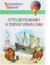

Путешественники и первооткрыватели

Энциклопедия рассказывает юным читателям о знаменитых путешественниках и важных географических открытиях, об освоении новых земель и переселенцах, а также о путешествиях и туризме в наши время. Книга имеет удобную структуру: каждый её разворот посвящен отдельной теме. Лаконичные, но содержательные тексты написаны простым и увлекательным языком и сопровождаются большим количеством ярких иллюстраций. В конце книги приводится алфавитный указатель. Издание адресовано детям младшего и среднего школьного возраста.